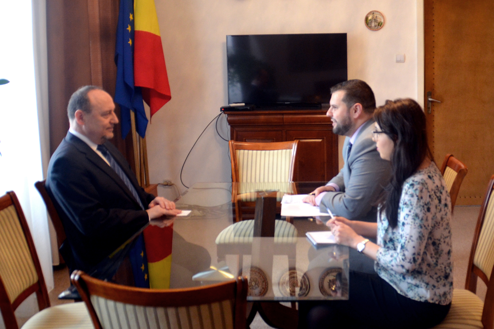
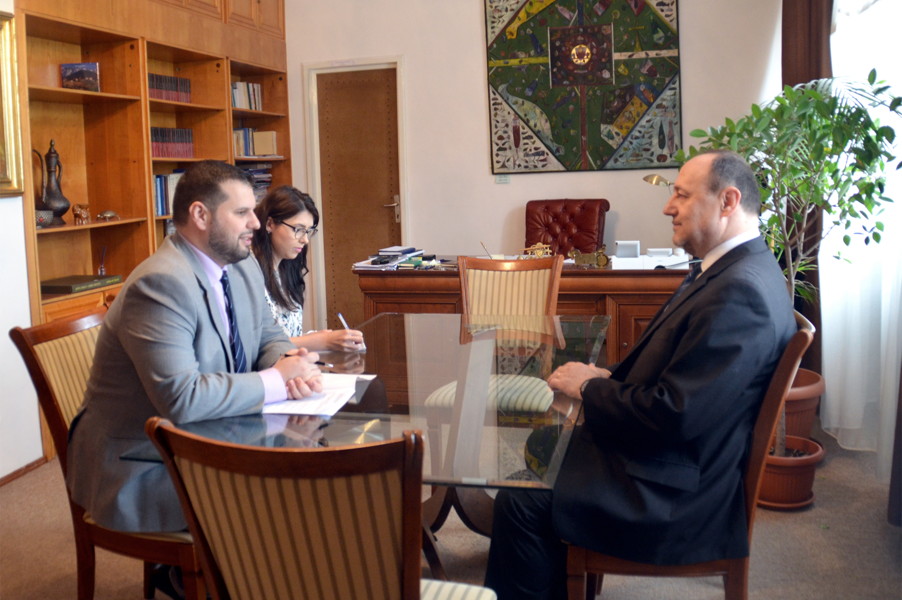

Ministrul delegat pentru relațiile cu românii de pretutindeni, Dan Stoenescu, l-a primit astăzi, 25 februarie 2016, pe ambasadorul Republicii Croația în România, Davor Vidiš.
Cu acest prilej, a fost evidențiat caracterul foarte bun al relațiilor bilaterale româno - croate și a fost subliniat rolul pe care comunitatea românească din Croația îl are în dinamismul dialogului dintre cele două țări. Ministrul delegat a reafirmat susținerea statului român pentru intensificarea interacțiunii interculturale dintre comunitatea românilor care trăiesc în Croația și societatea croată, reamintind de contribuția pozitivă a comunității românești la viața socială, culturală și economică din țara de reședință. De asemenea, a apreciat importantă existența unui schimb constant de opinii în ceea ce privește problemele minorităților naționale din Europa Centrală și Balcani pentru a se asigura standardele europene în domeniu.

În cadrul întrevederii, ministrul delegat a evocat importanța aplicării, de către autoritățile croate, a Programului de cooperare în domeniul educației care prevede predarea limbii române ca limbă maternă în instituțiile publice de învățământ pentru comunitățile românofone din Croația. Totodată, demnitarul român a reiterat atenția deosebită pe care partea română o acordă proiectelor destinate protejării și păstrării dialectului istro-român, aflat pe cale de dispariție și parte a patrimoniului cultural european și a exprimat aprecierea față de sprijinul pe care autoritățile croate l-au acordat implementării proiectelor ce vizează comunitatea lingvistică istro-română.

Ce doi interlocutori au convenit asupra necesității de valorificare a oportunităților oferite de relațiile bilaterale pe plan cultural, educațional și social, reafirmând interesul comun pentru un dialog permanent în acest sens.
February 25, 2016
© 2016 MAE